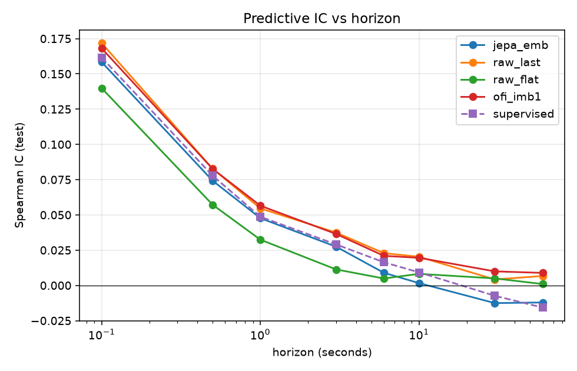
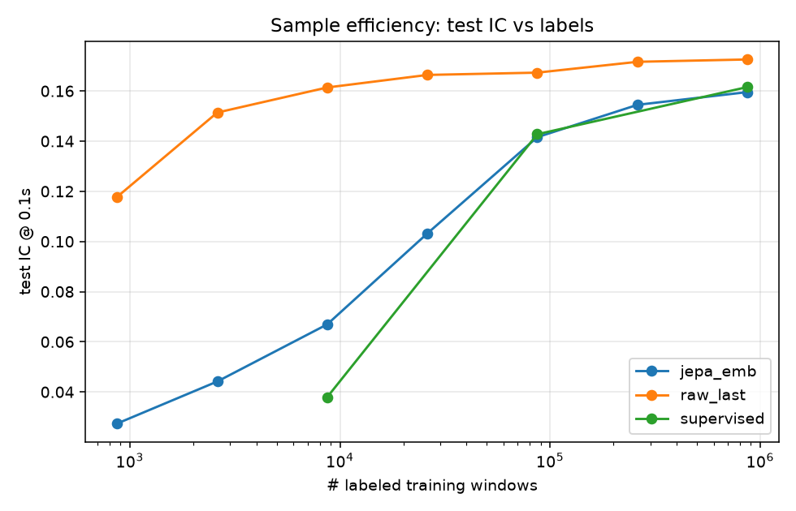
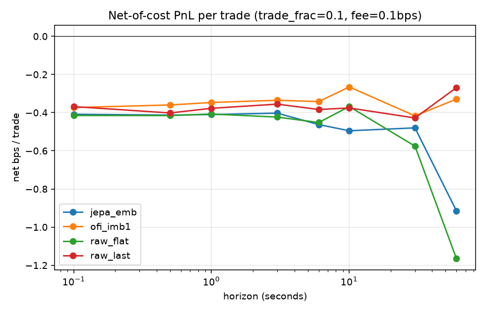
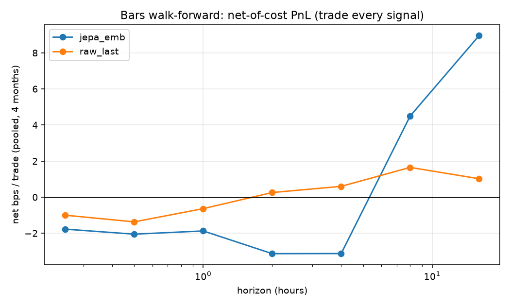
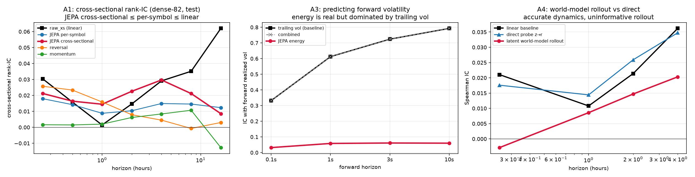

Joint-Embedding Predictive Architectures (JEPA) learn representations by predicting masked content in latent space rather than reconstructing inputs, a property well-suited to the low signal-to-noise regime of financial markets. We conduct a rigorous, leak-controlled feasibility study of a Time-Series JEPA across four signal families: (i) tick-level limit-order-book (LOB) microstructure (46M snapshots, SPY/QQQ), (ii) lower-frequency OHLCV bars, (iii) LLM-scored news sentiment (346k articles), and (iv) cryptocurrency funding-rate carry. We find that JEPA reliably learns valid label-free representations that match an identical encoder trained end-to-end on labels, yet across frequency, asset class, modality, and a 6× increase in model scale it never beats a simple linear model, and produces no robust net-of-cost trading edge. The binding constraints are transaction costs and the near-linear, near-Markovian nature of the accessible signal — not model capacity. The single bright spot, a weak contrarian news-sentiment effect (information diffusion, not microstructure), is directionally persistent but not standalone-tradeable on five months of data. We further test three architectural escapes — a cross-sectional Graph-JEPA over the whole universe, a latent world-model with planning, and predictive-uncertainty signals — on a survivorship-free universe with walk-forward validation; each captures genuinely real structure (notably, cross-sectional context beats a per-symbol model), yet none beats the matched simple baseline, and effective-rank and non-JEPA-baseline controls confirm the limit is the signal, not the architecture. We argue these negative-with-nuance results are themselves the contribution: they cleanly separate “the self-supervision works” from “there is exploitable alpha here.”
Generative and forecasting models of markets predict in input space — the next price or return — where the irreducible noise of a near-efficient market dominates the signal and forces the model to expend capacity modelling unpredictable detail. JEPA [1, 2, 3] instead predicts in latent space: a context encoder $f_\theta$ and an exponential-moving-average (EMA) target encoder $f_\xi$ embed two views of the data, and a predictor $g_\phi$ maps context embeddings to target embeddings, with the loss computed entirely between representations. The model is therefore free to discard unpredictable nuisance detail — exactly the property one wants for noisy financial series.
This study asks a deliberately falsifiable question: do JEPA representations yield better trading signals than supervised and classical baselines on real, freely-available market data? We decompose it into four hypotheses, tested across asset classes and modalities:
We report results honestly, including a methodological theme that recurs throughout: single-period results dramatically overstate edges, and only walk-forward / multi-period evaluation survives scrutiny.
All data is sourced from a live Interactive-Brokers paper-trading stack and a crypto trading system (TimescaleDB). We build every dataset ourselves from raw sources for full provenance.
Leakage control is treated as a first-class concern. Forty-six million LOB snapshots span only six weeks and are heavily autocorrelated, so the effective sample size is far smaller than the nominal count. We therefore (i) split strictly by calendar date and never by random shuffle; (ii) fit all normalization statistics on training data only; (iii) never let a window cross a (symbol, day) boundary; (iv) align news to the first trading session after publication; and (v) for cross-period claims, use expanding-window walk-forward evaluation.
An input window of $L$ consecutive feature vectors is split into non-overlapping time patches (PatchTST-style [4]); each patch is linearly embedded to dimension $D$ jointly over features (preserving cross-feature microstructure interactions) and contextualized by a Transformer encoder. Following I-JEPA / V-JEPA [2, 3]:
The objective is a smooth-$\ell_1$ loss in embedding space, with the target embeddings layer-normalized and detached:
$$\mathcal{L} \;=\; \mathrm{smooth}\text{-}\ell_1\!\Big(g_\phi\big(f_\theta(x_{\text{ctx}})\big),\; \operatorname{sg}\big[\,\mathrm{LN}(f_\xi(x))_{\text{tgt}}\big]\Big),\qquad \xi \leftarrow m\,\xi + (1-m)\,\theta .$$
Collapse is prevented by the EMA target with stop-gradient (no negatives); we additionally monitor the per-dimension embedding standard deviation as a collapse diagnostic. We study both a causal (predict the future) and a block / masked (interpolation) variant; we found causal latent extrapolation unstable on near-random-walk prices and adopt the canonical masked variant.
For each target horizon we (i) extract frozen representations, (ii) fit a ridge / linear probe on the training split with the regularization selected on validation, and (iii) report on the held-out test split. Baselines: order-flow-imbalance (OFI), a ridge on raw features, a ridge on the flattened raw window, and an identical encoder trained end-to-end on labels (to isolate the value of pretraining). The predictive metric is the Spearman information coefficient, $\mathrm{IC}=\rho_{\text{Spearman}}(\hat{y},\,y)$. Economic evaluation uses an event-driven backtest with non-overlapping holds and explicit costs: a round trip crosses the full bid–ask spread (we have the book) plus a per-side fee.
Single-snapshot order-flow imbalance is a powerful predictor at sub-second horizons that decays toward zero within seconds — textbook market-microstructure behaviour.

The frozen JEPA probe is statistically indistinguishable from an identical encoder trained end-to-end on labels, validating JEPA as a label-free representation learner. But neither deep model beats a 29-feature linear ridge.
| Method (test IC) | 0.1 s | 1 s | 3 s | 10 s | 30 s |
|---|---|---|---|---|---|
| JEPA (frozen) | +0.158 | +0.048 | +0.027 | +0.002 | −0.013 |
| Supervised (end-to-end, same arch) | +0.162 | +0.049 | +0.029 | +0.009 | −0.007 |
| Linear OFI | +0.168 | +0.057 | +0.036 | +0.020 | +0.010 |
| Raw-window ridge | +0.140 | +0.032 | +0.011 | +0.008 | +0.005 |
The LOB signal at these horizons is near-Markovian and near-linear: the current book state contains the predictive information; history and nonlinearity add nothing exploitable.
JEPA's representation is far more label-efficient than supervised deep learning — but a linear model on raw features is even more label-efficient and more accurate, so the advantage is moot.

A 6× larger encoder (20.7M parameters, trained on a second GPU) yields test IC@0.1 s of +0.156 — identical to the 3.5M-parameter model's +0.158, and still below the linear +0.172. The ceiling is the signal, not capacity: a clean negative control.
Net of a realistic round-trip spread plus fees, mean P&L per trade is negative at essentially every horizon for every method. A liquidity-taking strategy at sub-minute horizons on liquid ETFs is structurally unprofitable — consistent with how real high-frequency trading actually earns (providing liquidity, latency, rebates), not by crossing the spread.

On 15-minute bars, a first-pass single-month backtest showed an eye-catching +102 bps/trade at the 16-hour horizon. Under a 4-month leak-safe walk-forward it evaporated: the linear baseline nets only ~+1 bp/trade (within cost-assumption noise) and JEPA is negative at most horizons. This is the central methodological lesson of the study.

News sentiment is the lone non-price signal with a persistent sign: its IC against forward returns is negative in all six months (a “fade-the-sentiment” effect), strongest as the symbol-demeaned sentiment surprise. But a single test month overstated it (IC ≈ −0.13) versus the pooled six-month value (≈ −0.04). As a standalone cross-sectional long–short, its non-overlapping Sharpe is only +0.16 at a realistic 4 bps cost — not robustly tradeable on five months of data, though the favorable cost/move ratio at daily horizons makes it the most promising lead.
Fusing price with sentiment reduces test IC (price+sentiment +0.006 vs sentiment-only +0.080): daily price is efficient noise that dilutes the sentiment signal — so a multi-modal JEPA fusion is low-value here. In crypto, funding does not predict forward price (cross-sectional IC ≈ 0), and the funding-carry spread is a mere +0.3 bps/8 h while the cross-sectional fade loses to price momentum (−4.7 bps/8 h). No tradeable funding edge exists on this universe.
The arms above all ask “does a JEPA representation linearly predict returns better than a baseline?” and answer no. Guided by a survey of the JEPA literature, we next test the three ideas most likely to change the question toward where self-supervision is shown to pay — cross-sectional structure, non-directional targets, and planning. In every case the JEPA does capture genuinely real structure; it simply never beats the matched simple baseline.

We model the whole universe as a graph [10]: a per-symbol temporal encoder emits one token per symbol at each timestamp, a permutation-equivariant set-Transformer attends across symbols, and the JEPA objective masks a random subset of symbols and predicts their context-aware latents from the rest. On a survivorship-free panel of 449 names (including those delisted in a March-2026 universe collapse), with one frozen pretraining and expanding walk-forward folds, the picture is decisive under non-overlapping \(t\)-statistics: the only robustly significant horizon is 15 min, where the linear ridge (IC +0.038) leads reversal (+0.035), the cross-sectional JEPA (+0.027), and the per-symbol ablation (+0.021). Critically the cross-sectional JEPA beats its per-symbol ablation at every horizon — relative-value structure is real and the model learns it [13] — but it is the same near-linear reversal a ridge already captures, and beyond 15 min every signal is insignificant and sign-flips across months. Cross-sectional context helps the representation, not the bottom line.
Inspired by action-conditioned video world-models [8, 12], we learn a latent dynamics model \(g:z_t\!\to\!z_{t+1}\) on a frozen encoder and plan positions by receding-horizon control over the decoded return path. The dynamics model is genuinely accurate (latent MSE 0.077 vs 0.525 for the identity baseline), yet its multi-step return forecasts trail both the direct probe and the linear baseline at every horizon — the return-relevant signal is the small unpredictable part, washed out by an \(\ell_2\)-accurate rollout. Cost-aware planning beats a myopic policy (by trading half as much) but only reaches Sharpe \(\approx 0\), and buy-and-hold beats both: the planner’s best move is to barely trade. (For a price-taker the action-conditioned world-model degenerates; the genuine version needs market-by-order fill data we exclude.)
Because a smooth-\(\ell_1\) point predictor collapses to the conditional mean, we test whether the JEPA’s own latent prediction-error (“energy”) is a useful non-directional signal. It is real but weak: energy predicts forward realized volatility with IC +0.03–+0.06, rising with horizon — yet trailing realized volatility predicts it far better (+0.33–+0.79), and a combined model collapses onto the trailing-vol term. Confidence-gating the directional strategy (trade only low-energy windows) does not rescue it from the spread. The non-directional channel is more predictable than direction — just not beyond a trivial volatility-clustering baseline.
Two checks foreclose the standard rebuttals. RankMe [11] effective rank is high for every encoder (65–88 of 128–192 dimensions) — the negative is not an artifact of a collapsed representation. And a PITS baseline [9] (a 59k-parameter, attention-free patch autoencoder that drops the JEPA masked-context mechanism entirely) lands in the same weak band as the JEPA and the linear model — so the masked-context machinery itself adds nothing here, upgrading the claim to “the latent-prediction mechanism carries no extra signal on near-Markovian price data.”
| Arm | Signal? | Beats linear? | Tradeable net of cost? |
|---|---|---|---|
| HFT LOB (0.1–60 s) | strong, micro | no | no — spread-dominated |
| Bars 15 m (walk-forward) | weak | no | no — within-noise |
| Model scale (6×) | — | no change | — |
| News sentiment (daily) | weak, contrarian, persistent | best non-price | no — Sharpe ~0.16 |
| Price + sentiment fusion | — | fusion hurts | no |
| Crypto funding carry | ~none | — | no — fade loses to momentum |
| Cross-sectional Graph-JEPA | real (beats per-symbol) | no — ≤ linear reversal | no — insignificant beyond 15 min |
| Latent world-model + planning | accurate dynamics | no — rollout < direct < linear | no — loses to buy-hold |
| Latent energy (vol / regime) | weak, non-directional | no — ≤ trailing vol | no — gating doesn't help |
The headline is a clean dissociation: the self-supervision works, but there is no capturable alpha to learn. JEPA's representations are genuine — they recover supervised-quality predictive content with no labels and far fewer of them — yet across every axis we varied (frequency, asset class, information modality, and a large change in capacity) they never exceed a simple linear model, and the resulting signals do not survive transaction costs or multi-period validation. The binding constraints are economic (the bid–ask spread relative to short-horizon volatility) and statistical (the accessible signal is near-linear and near-Markovian), not architectural.
This is consistent with a nuanced efficient-markets view: the order book equilibrates faster than a liquidity-taker can act, so microstructure predictability exists but is not capturable; information diffusion is slower, so news sentiment carries a faint, persistent — and contrarian — footprint, the one place a real edge might live with more data. Two methodological lessons generalize beyond JEPA: (i) pooling/representation choices dominate measured signal — last-token pooling beat mean-pooling by 5× because the alpha lives in the most recent state; and (ii) single-period backtests are systematically optimistic — every promising single-window result here collapsed under walk-forward.
Round 2 sharpens rather than overturns this. The three architectural escapes most likely, a priori, to beat the near-Markovian ceiling each reproduced it — and instructively, each did learn something real: a cross-sectional set-Transformer beats a per-symbol encoder (relative value is genuine structure), a latent dynamics model rolls forward accurately, and latent prediction-error tracks volatility. That these genuine capabilities still fail to beat a ridge, trailing volatility, or buy-and-hold is the cleanest statement of the thesis: the ceiling is the information, not the model. The effective-rank and attention-free-baseline controls close the last escape hatch — the representations are high-rank, and a 59k-parameter patch autoencoder matches the full JEPA, so neither collapse nor the masked-prediction mechanism explains the result.
The freely-available data is short (six weeks of LOB; five months of news) and U.S.-equity / mid-cap-crypto biased; results may not transfer to other regimes. We tested liquidity-taking only. The most promising untested levers all require paid data or a different framing, and would change the verdict if anything does: L3 / market-by-order data for a liquidity-provision (queue/fill, adverse-selection) model — where genuine HFT alpha actually lives; multi-year sentiment history to properly power the contrarian effect; options / implied-volatility surfaces; and CME futures market-by-order. We release all code and a complete dated research log to support replication and extension.